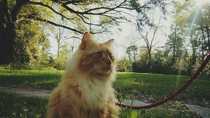
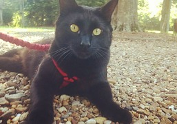
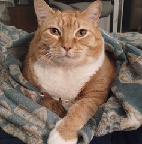

Hello, my name is Lauren! I'm a non-traditional student attending Weber State University majoring in Computer Science. I originally attended Southeastern Louisiana University for a degree in Biological Sciences with a concentration in Environmental Science and Conservation Biology. Unfortunately, I didn't complete that degree due to circumstances out of my control, but I am exited to be back in school and I am grateful that in the interim I realized how useful a computer science degree is.
During the time my husband Art was working on his doctoral degree we took in a few stray cats; Cheeto found us first, then Arthur, then Bobby. My cats are my entire world. I've always been an animal person, but growing up my family only had dogs. After we took Cheeto in I realized I am a cat person through and through. Unfortunately, in March 2024 we lost Bobby unexpectedly, but we'll remember him always.
| Cheeto | Arthur | Bobby |
|---|---|---|
|  |  |  |
In my free time I enjoy playing video games with my husband and friends, or reading if I am not feeling social. SciFi is my favorite genre. I also enjoy fiber arts and I knit, crochet, and embroider as a creative outlet. My husband and I love attending music festivals, and we meet up with his family every year at Bonnaroo Music and Arts festival.
I'm currently reading Leviathan Wakes, by James S.A. Corey.